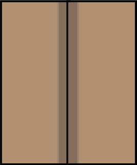
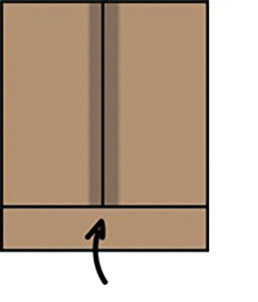
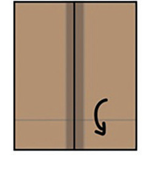

3. Unganisha pande za karatasi kwa gundi ya maji;

Kielelezo namba 10: Pande mbili za karatasi zilizounganishwa kwa gundi
4. Kunja upande wa chini wa mfuko wako, gandamiza na ufungue ukiacha alama ya mkunjo;


Kielelezo namba 11: Namna ya kukunja upande wa chini wa mfuko
5. Fungua upande wa chini na ukunje kwa mtindo wa pembetatu na ugandamize;